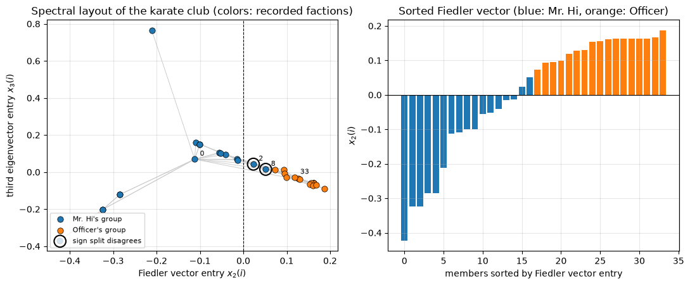

10.17. Case study: spectral partitioning of Zachary’s karate club#
This case study accompanies Chapter 10. We compute the
eigenvalues and eigenvectors of a graph Laplacian with our own implementation
of the symmetric QR algorithm (Algorithm 10.3), compare with
scipy.linalg.eigh, and use the eigenvector of the second smallest eigenvalue
to split a social network in two.
Learning objectives. After working through this case study you should be able to
form the Laplacian of a graph and state its basic spectral properties;
compute its eigenpairs by Householder tridiagonalization followed by the Wilkinson-shifted QR algorithm with deflation, and check them against LAPACK;
explain the spectral partitioning heuristic as a relaxation of a combinatorial cut problem;
evaluate the result against recorded ground truth, and say clearly what the comparison does and does not show.
from pathlib import Path
import urllib.request
import matplotlib.pyplot as plt
import numpy as np
import scipy.linalg as sla
rng = np.random.default_rng(1977)
u = np.finfo(float).eps / 2 # unit roundoff, 2**-53
plt.rcParams.update({"figure.figsize": (6.4, 4.0), "axes.grid": True, "grid.alpha": 0.3})
DATA_URL = "https://raw.githubusercontent.com/aalsammani/Scientific-Computations-I-Notebooks/main/data/"
def data_file(name):
"""Return a path to data/<name>, downloading it if it is not available locally."""
local = Path("../../data") / name
if local.exists():
return local
target = Path(name)
if not target.exists():
urllib.request.urlretrieve(DATA_URL + name, target)
return target
10.17.1. 1. The data#
W. W. Zachary studied the members of a university karate club [Zachary, 1977]. A conflict between the instructor (“Mr. Hi”) and the club’s administrator (the “Officer”) split the club into two groups. Zachary recorded the social ties between the members and which group each member joined after the split.
The file karate_club.npz (see data/README.md) contains
adjacency: the symmetric \(34\times34\) 0/1 adjacency matrix of the friendship network (an edge means that the two members interacted), without self-loops. It is the unweighted version of the transcription distributed with NetworkX;faction: for each member (0-based index), the group joined after the split, \(0\) for Mr. Hi’s group and \(1\) for the Officer’s group.
with np.load(data_file("karate_club.npz")) as data:
Adj = data["adjacency"].astype(float)
faction = data["faction"].astype(int)
n = Adj.shape[0]
deg = Adj.sum(axis=1)
print(f"{n} members, {int(Adj.sum() / 2)} edges, factions of sizes {np.bincount(faction)}")
print(f"symmetric: {np.array_equal(Adj, Adj.T)}, self-loops: {int(np.trace(Adj))}")
print(f"degrees from {int(deg.min())} to {int(deg.max())}; the two largest degrees belong to "
f"members {np.argsort(deg)[-2:]} (factions {faction[np.argsort(deg)[-2:]]})")
assert n == 34 and Adj.sum() == 156 and np.array_equal(Adj, Adj.T)
34 members, 78 edges, factions of sizes [17 17]
symmetric: True, self-loops: 0
degrees from 1 to 17; the two largest degrees belong to members [ 0 33] (factions [0 1])
10.17.2. 2. The graph Laplacian#
With the degree matrix \(D = \operatorname{diag}(d_1,\dots,d_n)\), the Laplacian of the graph is \(L = D - A\). For every \(x\in\mathbb{R}^n\),
so \(L\) is symmetric positive semidefinite, and \(L\mathbf 1 = 0\) for the vector of ones. The eigenvalue \(0\) has multiplicity equal to the number of connected components; in particular the second smallest eigenvalue \(\lambda_2\), which Fiedler [1973] called the algebraic connectivity, is positive exactly when the graph is connected. An eigenvector for \(\lambda_2\) is called a Fiedler vector.
10.17.2.1. Why the Fiedler vector partitions a graph#
Split the vertices into a set \(S\) and its complement \(\bar S\), and let \(\operatorname{cut}(S,\bar S)\) be the number of edges between them. A small cut alone favors splitting off a single vertex, so one balances it by the sizes,
Following von Luxburg [2007] (Section 5.1), define \(f_i = \sqrt{|\bar S|/|S|}\) for \(i\in S\) and \(f_i = -\sqrt{|S|/|\bar S|}\) for \(i\in\bar S\). A short computation gives \(f^T\mathbf 1 = 0\), \(\|f\|_2^2 = n\) and \(f^TLf = n\operatorname{RatioCut}(S,\bar S)\). Minimizing the RatioCut over all partitions is a hard combinatorial problem. Dropping the requirement that \(f\) take only two values and minimizing \(f^TLf/f^Tf\) over all \(f\perp\mathbf 1\) gives, by the Courant–Fischer theorem (Chapter 9), the value \(\lambda_2\), attained at the Fiedler vector. Hence
and the heuristic is to split the vertices by the signs of the Fiedler vector. It is a relaxation: nothing guarantees that the sign pattern of the relaxed solution is the best partition.
L = np.diag(deg) - Adj
x = rng.standard_normal(n)
edges = np.transpose(np.nonzero(np.triu(Adj)))
quad = sum((x[i] - x[j]) ** 2 for i, j in edges)
print(f"x^T L x = {x @ L @ x:.12f}, sum over edges = {quad:.12f}")
print(f"||L 1||_inf = {np.abs(L @ np.ones(n)).max()}, ||L||_2 = {np.linalg.norm(L, 2):.4f}")
assert abs(x @ L @ x - quad) < 100 * u * np.abs(L).sum() * np.abs(x).max() ** 2
x^T L x = 101.709704551968, sum over edges = 101.709704551968
||L 1||_inf = 0.0, ||L||_2 = 18.1367
10.17.3. 3. Eigenvalues by the QR algorithm#
We copy the functions of the lab: Householder tridiagonalization and the implicitly shifted symmetric QR algorithm with the Wilkinson shift and deflation, with accumulation of the rotations so that we also obtain eigenvectors. The eigenvector matrix is \(X = Q_0Q_1\), where \(Q_0\) comes from the tridiagonalization and \(Q_1\) accumulates the QR steps.
def house(x):
"""Householder vector v (v[0] = 1) and beta with (I - beta v v^T) x = alpha e_1."""
x = np.asarray(x, dtype=float)
normx = np.linalg.norm(x)
v = x.copy()
if normx == 0.0:
v[:] = 0.0
v[0] = 1.0
return v, 0.0
v[0] = x[0] + (1.0 if x[0] >= 0 else -1.0) * normx
v /= v[0]
return v, 2.0 / (v @ v)
def tridiagonalize(S):
"""Return T = Q^T S Q tridiagonal (symmetrized band) and Q, by Householder reflectors."""
H = np.array(S, dtype=float)
m = H.shape[0]
Q = np.eye(m)
for k in range(m - 2):
v, beta = house(H[k + 1:, k])
H[k + 1:, k:] -= beta * np.outer(v, v @ H[k + 1:, k:])
H[:, k + 1:] -= beta * np.outer(H[:, k + 1:] @ v, v)
Q[:, k + 1:] -= beta * np.outer(Q[:, k + 1:] @ v, v)
T = np.triu(np.tril(H, 1), -1)
return (T + T.T) / 2, Q
def givens(a, b):
"""c, s with [[c, s], [-s, c]] @ [a, b] = [r, 0]."""
if b == 0.0:
return 1.0, 0.0
r = np.hypot(a, b)
return a / r, b / r
def wilkinson_shift(a, b, c):
"""Eigenvalue of [[a, b], [b, c]] closer to c."""
delta = (a - c) / 2.0
denom = abs(delta) + np.hypot(delta, b)
if denom == 0.0:
return c
return c - (1.0 if delta >= 0 else -1.0) * b * b / denom
def tridiag_qr_step(T, lo, hi, mu, Q=None):
"""Implicit symmetric QR step with shift mu on T[lo:hi+1, lo:hi+1], in place."""
x, z = T[lo, lo] - mu, T[lo + 1, lo]
for k in range(lo, hi):
c, s = givens(x, z)
G = np.array([[c, s], [-s, c]])
a0, a1 = max(k - 1, lo), min(k + 3, hi + 1)
T[k:k + 2, a0:a1] = G @ T[k:k + 2, a0:a1]
T[a0:a1, k:k + 2] = T[a0:a1, k:k + 2] @ G.T
if Q is not None:
Q[:, k:k + 2] = Q[:, k:k + 2] @ G.T
if k > lo:
T[k + 1, k - 1] = T[k - 1, k + 1] = 0.0
if k < hi - 1:
x, z = T[k + 1, k], T[k + 2, k]
def tridiag_eig(T0, Q=None, maxiter=10_000):
"""Wilkinson-shifted symmetric tridiagonal QR with deflation; returns eigenvalues and step count."""
T = np.array(T0, dtype=float)
hi, steps = T.shape[0] - 1, 0
while hi > 0:
for i in range(hi):
if abs(T[i + 1, i]) <= u * (abs(T[i, i]) + abs(T[i + 1, i + 1])):
T[i + 1, i] = T[i, i + 1] = 0.0
if T[hi, hi - 1] == 0.0:
hi -= 1
continue
lo = hi - 1
while lo > 0 and T[lo, lo - 1] != 0.0:
lo -= 1
if steps >= maxiter:
raise RuntimeError("no convergence")
tridiag_qr_step(T, lo, hi, wilkinson_shift(T[hi - 1, hi - 1], T[hi, hi - 1], T[hi, hi]), Q)
steps += 1
return np.diag(T).copy(), steps
T, Q0 = tridiagonalize(L)
Q1 = np.eye(n)
lam_qr, steps = tridiag_eig(T, Q=Q1)
order = np.argsort(lam_qr)
lam_qr, X_qr = lam_qr[order], (Q0 @ Q1)[:, order]
lam_ref, X_ref = sla.eigh(L) # LAPACK dsyevr (MRRR), the default driver
normL = np.linalg.norm(L, 2)
diff = np.abs(lam_qr - lam_ref).max()
print(f"QR steps: {steps} for {n} eigenvalues ({steps / n:.2f} per eigenvalue)")
print(f"max |lambda_QR - lambda_eigh| = {diff:.1e} = {diff / (u * normL):.1f} u ||L||_2")
print(f"residual ||L X - X Lambda||_F / ||L||_2 = {np.linalg.norm(L @ X_qr - X_qr * lam_qr) / normL:.1e}")
print(f"orthogonality ||X^T X - I||_F = {np.linalg.norm(X_qr.T @ X_qr - np.eye(n)):.1e}")
print(f"smallest eigenvalue: QR {lam_qr[0]:.2e}, eigh {lam_ref[0]:.2e} (exact value 0)")
# Both computations are backward stable; by Weyl's theorem each eigenvalue has an absolute error
# of a modest multiple of u ||L||_2, so their difference is bounded by twice that.
assert diff < 10 * n * u * normL
assert abs(lam_qr[0]) < 10 * n * u * normL and abs(lam_ref[0]) < 10 * n * u * normL
QR steps: 56 for 34 eigenvalues (1.65 per eigenvalue)
max |lambda_QR - lambda_eigh| = 3.6e-14 = 17.6 u ||L||_2
residual ||L X - X Lambda||_F / ||L||_2 = 3.8e-15
orthogonality ||X^T X - I||_F = 8.3e-15
smallest eigenvalue: QR -3.90e-16, eigh 1.56e-15 (exact value 0)
The two computations agree to a small multiple of \(u\|L\|_2\), as backward stability and Weyl’s theorem predict. The exact eigenvalue \(0\) is not computed as \(0\) but as a number of order \(10^{-15}\), possibly negative: the error bound is absolute, and relative to \(\|L\|_2\approx18\) this is at the level of rounding errors. Fewer than two QR steps per eigenvalue were needed, in line with the counts for the random matrices of the lab.
The spectrum contains the eigenvalue \(2\) with multiplicity five. The QR algorithm has no difficulty with repeated eigenvalues of a symmetric matrix; only the individual eigenvectors for \(\lambda = 2\) are not unique. The multiplicity has a combinatorial explanation: if two nonadjacent vertices \(i\) and \(j\) have the same neighbors, then \(L(e_i - e_j) = d_i(e_i - e_j)\). Five members of degree \(2\) share the neighbors \(32\) and \(33\), and two more share the neighbors \(0\) and \(1\), which gives \(4 + 1\) independent eigenvectors.
print("eigenvalues:", np.round(lam_ref[:8], 4), "...", np.round(lam_ref[-3:], 4))
print("multiplicity of 2:", int(np.sum(np.abs(lam_ref - 2) < 1e-10)))
twins = [(i, j) for i in range(n) for j in range(i + 1, n)
if Adj[i, j] == 0 and np.array_equal(Adj[i], Adj[j])]
print("pairs of nonadjacent vertices with identical neighbors:", twins)
print("their neighbors:", {i: [int(k) for k in np.nonzero(Adj[i])[0]] for i in (14, 15, 18, 20, 22, 17, 21)})
for i, j in twins[:1] + twins[-1:]:
e = np.zeros(n)
e[i], e[j] = 1.0, -1.0
assert np.array_equal(L @ e, deg[i] * e)
eigenvalues: [0. 0.4685 0.9092 1.125 1.2594 1.5993 1.7619 1.8261] ... [13.3061 17.0552 18.1367]
multiplicity of 2: 5
pairs of nonadjacent vertices with identical neighbors: [(14, 15), (14, 18), (14, 20), (14, 22), (15, 18), (15, 20), (15, 22), (17, 21), (18, 20), (18, 22), (20, 22)]
their neighbors: {14: [32, 33], 15: [32, 33], 18: [32, 33], 20: [32, 33], 22: [32, 33], 17: [0, 1], 21: [0, 1]}
The graph is connected, since \(\lambda_1 = 0\) is simple and \(\lambda_2 = 0.4685 > 0\).
10.17.4. 4. The Fiedler partition#
Eigenvectors are determined only up to sign, so we fix the sign of the Fiedler
vector so that member 33 (the vertex of largest degree, in the Officer’s group)
has a positive entry, and put the members with positive entries in group 1.
The eigenvectors from our QR code and from eigh agree up to that sign,
because \(\lambda_2\) is simple and well separated from \(\lambda_1\) and
\(\lambda_3\) (gaps of about \(0.47\) and \(0.44\)).
v2 = X_qr[:, 1] * np.sign(X_qr[33, 1])
v2_ref = X_ref[:, 1] * np.sign(X_ref[33, 1])
print(f"lambda_2 = {lam_ref[1]:.4f}; ||v2_QR - v2_eigh||_2 = {np.linalg.norm(v2 - v2_ref):.1e}")
# eigenvector perturbation ~ u ||L|| / gap; gap = min(lambda_2 - lambda_1, lambda_3 - lambda_2)
gap = min(lam_ref[1] - lam_ref[0], lam_ref[2] - lam_ref[1])
assert np.linalg.norm(v2 - v2_ref) < 100 * n * u * normL / gap
group = (v2 > 0).astype(int)
wrong = np.nonzero(group != faction)[0]
print(f"group sizes {np.bincount(group)}; members placed differently from their faction: {wrong}")
print(f"their recorded factions: {faction[wrong]}; their Fiedler entries: {np.round(v2[wrong], 4)}")
print(f"the five smallest |v2| entries belong to members {np.argsort(np.abs(v2))[:5]}")
def cut(g):
return int(Adj[np.ix_(g == 0, g == 1)].sum())
def ratio_cut(g):
return cut(g) * (1 / np.sum(g == 0) + 1 / np.sum(g == 1))
for name, g in (("Fiedler sign split", group), ("recorded factions", faction)):
print(f"{name:19s}: cut = {cut(g):2d} edges, RatioCut = {ratio_cut(g):.4f}")
assert lam_ref[1] <= ratio_cut(g)
lambda_2 = 0.4685; ||v2_QR - v2_eigh||_2 = 2.6e-15
group sizes [15 19]; members placed differently from their faction: [2 8]
their recorded factions: [0 0]; their Fiedler entries: [0.0232 0.0516]
the five smallest |v2| entries belong to members [19 13 2 1 8]
Fiedler sign split : cut = 10 edges, RatioCut = 1.1930
recorded factions : cut = 11 edges, RatioCut = 1.2941
The sign of the Fiedler vector reproduces the recorded split for \(32\) of the \(34\) members. The two exceptions, members \(2\) and \(8\) (members \(3\) and \(9\) in Zachary’s 1-based numbering), joined Mr. Hi’s group but are placed with the Officer’s group, and both have entries of small magnitude, \(0.023\) and \(0.052\): they sit near the boundary of the relaxed solution. The Fiedler partition cuts \(10\) edges, the recorded split \(11\), and the Fiedler partition also has the smaller RatioCut. By the criterion that the method optimizes (approximately), it has found a better partition than the one that happened. Both RatioCuts are above \(\lambda_2\), as the bound of Section 2 requires.
10.17.4.1. Visualization#
A standard way to draw a graph without a layout library is to place vertex \(i\) at the point \((x_2(i), x_3(i))\) given by the eigenvectors of \(\lambda_2\) and \(\lambda_3\).
v3 = X_qr[:, 2]
fig, axes = plt.subplots(1, 2, figsize=(11, 4.6))
ax = axes[0]
for i, j in edges:
ax.plot([v2[i], v2[j]], [v3[i], v3[j]], color="0.8", lw=0.7, zorder=1)
for fac, color, label in ((0, "C0", "Mr. Hi's group"), (1, "C1", "Officer's group")):
idx = faction == fac
ax.scatter(v2[idx], v3[idx], s=45, color=color, edgecolor="k", lw=0.5, zorder=2, label=label)
ax.scatter(v2[wrong], v3[wrong], s=180, facecolor="none", edgecolor="k", lw=1.5, zorder=3,
label="sign split disagrees")
for i in (0, 33, *wrong):
ax.annotate(str(i), (v2[i], v3[i]), textcoords="offset points", xytext=(6, 4), fontsize=8)
ax.axvline(0, color="k", lw=0.8, ls="--")
ax.set_xlabel("Fiedler vector entry $x_2(i)$")
ax.set_ylabel("third eigenvector entry $x_3(i)$")
ax.set_title("Spectral layout of the karate club (colors: recorded factions)")
ax.legend(fontsize=8, loc="lower left")
ax = axes[1]
order_v2 = np.argsort(v2)
colors = np.where(faction[order_v2] == 0, "C0", "C1")
ax.bar(np.arange(n), v2[order_v2], color=colors)
ax.axhline(0, color="k", lw=0.8)
ax.set_xlabel("members sorted by Fiedler vector entry")
ax.set_ylabel("$x_2(i)$")
ax.set_title("Sorted Fiedler vector (blue: Mr. Hi, orange: Officer)")
plt.tight_layout()
plt.show()

In the left panel the horizontal coordinate separates the two groups, with the two circled members just to the right of the dashed line at zero. The vertical coordinate is less informative: one peripheral vertex has a much larger entry of \(x_3\) than all the others, so the layout is uneven. In the right panel the entries of Mr. Hi’s group (blue) are all negative except the two small positive ones.
10.17.5. 5. The normalized Laplacian#
The RatioCut measures the size of a group by its number of vertices. The normalized cut measures it by the sum of the degrees, and its relaxation leads to the normalized Laplacian \(L_{\text{sym}} = I - D^{-1/2}AD^{-1/2}\): one splits by the signs of \(D^{-1/2}y_2\), where \(y_2\) is the eigenvector for the second smallest eigenvalue of \(L_{\text{sym}}\) [von Luxburg, 2007]. We compute it with our QR code as well.
Dm = np.diag(deg ** -0.5)
L_sym = np.eye(n) - Dm @ Adj @ Dm
T_s, Q0_s = tridiagonalize(L_sym)
Q1_s = np.eye(n)
mu_s, steps_s = tridiag_eig(T_s, Q=Q1_s)
order = np.argsort(mu_s)
mu_s, Y = mu_s[order], (Q0_s @ Q1_s)[:, order]
y = Dm @ Y[:, 1]
y *= np.sign(y[33])
group_n = (y > 0).astype(int)
print(f"{steps_s} QR steps; second eigenvalue of L_sym = {mu_s[1]:.4f} "
f"(eigh: {sla.eigh(L_sym, eigvals_only=True)[1]:.4f})")
print(f"members placed differently from their faction: {np.nonzero(group_n != faction)[0]}")
53 QR steps; second eigenvalue of L_sym = 0.1323 (eigh: 0.1323)
members placed differently from their faction: [2 8]
The normalized version places the same two members differently from their recorded faction. On this small graph the two relaxations lead to the same partition.
10.17.6. 6. What the result shows, and what it does not#
The numerical part of the case study is unambiguous: our QR implementation and LAPACK agree to rounding level in every eigenvalue, and the Fiedler vectors agree to within the accuracy that the eigenvalue gap allows.
The modeling part is weaker than the familiar headline “spectral clustering finds the two factions” suggests. The sign split agrees with the recorded outcome for \(32\) of \(34\) members, and it finds a partition with a smaller cut and a smaller RatioCut than the real one. The friendship graph explains most of the split, but not all of it; the remaining two members are close to the boundary, and their choices presumably depended on things the graph does not record.
Other splitting rules give other answers. Splitting at the median of the Fiedler vector (Your turn, exercise 2) happens to reproduce the recorded factions exactly, but that rule uses the knowledge that the two groups have equal size, which one would not have in advance. Choosing a rule after seeing the answer is not a fair evaluation.
One network with \(34\) vertices is an illustration, not a validation of spectral clustering. It is a good illustration because the ground truth was recorded independently of the method, and because the graph is small enough to inspect every disagreement.
10.17.7. Your turn#
Verify the identities \(f^T\mathbf 1 = 0\), \(\|f\|_2^2 = n\) and \(f^TLf = n\operatorname{RatioCut}(S,\bar S)\) numerically for the recorded factions.
Split at the median of the Fiedler vector instead of at zero. How many members are placed differently from their faction? Why is this not a fair test?
Our file contains the unweighted graph. The NetworkX transcription described in
data/README.mdalso records interaction counts. Using those counts as edge weights (\(L = D - W\) with weighted degrees), repeat the partition and compare.Use
scipy.linalg.eigh(L, subset_by_index=[0, 2])to compute only the three smallest eigenpairs. Which LAPACK algorithm does this use, according to Section 10.11?
10.17.8. Key takeaways#
The graph Laplacian is symmetric positive semidefinite; its small eigenvalues and their eigenvectors describe how the graph can be cut.
Tridiagonalization plus Wilkinson-shifted QR with deflation computes all eigenpairs in about two steps per eigenvalue, in agreement with LAPACK to rounding level; the zero eigenvalue is computed with an absolute, not a relative, error of order \(u\|L\|_2\).
The Fiedler vector solves a relaxation of the RatioCut problem. On the karate club it agrees with the recorded split for 32 of 34 members, and it finds a partition with a smaller cut than the recorded one.
10.17.9. Further reading#
Zachary [1977] for the data and the sociological background; Fiedler [1973] for algebraic connectivity; von Luxburg [2007] for a tutorial on spectral clustering, including the RatioCut and normalized cut relaxations; Parlett [1998] and Demmel [1997] (Chapter 5) for the symmetric eigenvalue algorithms.